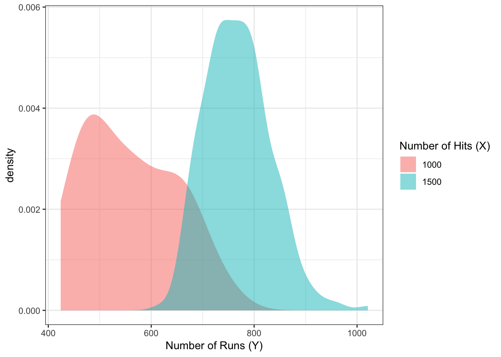
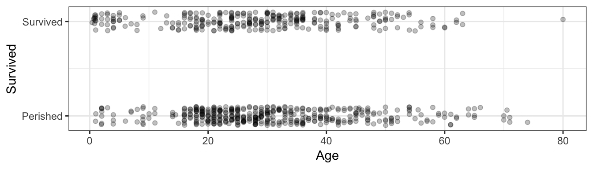
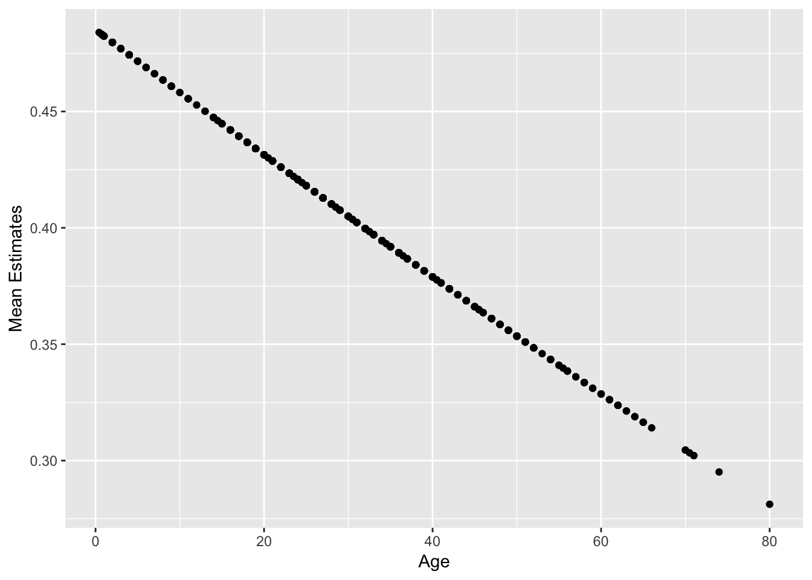

Chapter 16 Scales and the restricted range problem
Caution: in a highly developmental stage! See Section 1.1.
link functions and alternative parameter interpretations (categorical data too)
In Regression I, the response was allowed to take on any real number. But what if the range is restricted?
16.1 Problems
Here are some common examples.
- Positive values: river flow.
- Lower limit: 0
- Percent/proportion data: proportion of income spent on housing in Vancouver.
- Lower limit: 0
- Upper limit: 1.
- Binary data: success/failure data.
- Only take values of 0 and 1.
- Count data: number of male crabs nearby a nesting female
- Only take count values (0, 1, 2, …)
Here is an example of the fat content of a cow’s milk, which was recorded over time. Data are from the paper “Transform or Link?”. Let’s consider data as of week 10:
(plot_cow <- cow %>%
filter(week >= 10) %>%
ggplot(aes(week, fat*100)) +
geom_point() +
theme_bw() +
labs(y = "Fat Content (%)") +
ggtitle("Fat content of cow milk"))
Let’s try fitting a linear regression model.
plot_cow +
geom_smooth(method = "lm", se = FALSE)
Notice the problem here – the regression lines extend beyond the possible range of the response. This is mathematically incorrect, since the expected value cannot extend outside of the range of Y. But what are the practical consequences of this?
In practice, when fitting a linear regression model when the range of the response is restricted, we lose hope for extrapolation, as we obtain logical fallacies if we do. In this example, a cow is expected to produce negative fat content after week 35!
Despite this, a linear regression model might still be useful in these settings. After all, the linear trend looks good for the range of the data.
16.2 Solutions
How can we fit a regression curve to stay within the bounds of the data, while still retaining the interpretability that we have with a linear model function? Remember, non-parametric methods like random forests or loess will not give us interpretation. Here are some options:
- Transform the data.
- Transform the linear model function: link functions
- Use a scientifically-backed parametric function.
16.2.1 Solution 1: Transformations
One solution that might be possible is to transform the response so that its range is no longer restricted. The most typical example is for positive data, like river flow. If we log-transform the response, then the new response can be any real number. All we have to do is fit a linear regression model to this transformed data.
One downfall is that we lose interpretability, since we are estimating the mean of \(\log(Y)\) (or some other transformation) given the predictors, not \(Y\) itself! Transforming the model function by exponentiating will not fix this problem, either, since the exponential of an expectation is not the expectation of an exponential. Though, this is a mathematical technicality, and might still be a decent approximation in practice.
Also, transforming the response might not be fruitful. For example, consider a binary response. No transformation can spread the two values to be non-binary!
16.2.2 Solution 2: Link Functions
Instead of transforming the data, why not transform the model function? For example, instead of taking the logarithm of the response, perhaps fit the model \[ E(Y|X=x) = \exp(\beta_0 + \beta x) = \alpha \exp(\beta x) \]. Or, in general, \[ g(E(Y|X=x)) = X^T \beta \] for some increasing function \(g\) called the link function.
This has the added advantage that we do not need to be able to transform the response.
Two common examples of link functions:
- \(\log\), for positive response values.
- Parameter interpretation: an increase of one unit in the predictor is associated with an \(\exp(\beta)\) times increase in the mean response, where \(\beta\) is the slope parameter.
- \(\text{logit}(x)=\log(x/(1-x))\), for binary response values.
- Parameter interpretation: an increase of one unit in the predictor is associated with an \(\exp(\beta)\) times increase in the odds of “success”, where \(\beta\) is the slope parameter, and odds is the ratio of success to failure probabilities.
16.2.3 Solution 3: Scientifically-backed functions
Sometimes there are theoretically derived formulas for the relationship between response and predictors, which have parameters that carry some meaning to them.
16.3 GLM’s in R
This document introduces the glm() function in R for fitting a Generlized Linear Model (GLM). We’ll work with the titanic_train dataset in the titanic package.
str(titanic)## 'data.frame': 714 obs. of 12 variables:
## $ PassengerId: int 1 2 3 4 5 7 8 9 10 11 ...
## $ Survived : int 0 1 1 1 0 0 0 1 1 1 ...
## $ Pclass : int 3 1 3 1 3 1 3 3 2 3 ...
## $ Name : chr "Braund, Mr. Owen Harris" "Cumings, Mrs. John Bradley (Florence Briggs Thayer)" "Heikkinen, Miss. Laina" "Futrelle, Mrs. Jacques Heath (Lily May Peel)" ...
## $ Sex : chr "male" "female" "female" "female" ...
## $ Age : num 22 38 26 35 35 54 2 27 14 4 ...
## $ SibSp : int 1 1 0 1 0 0 3 0 1 1 ...
## $ Parch : int 0 0 0 0 0 0 1 2 0 1 ...
## $ Ticket : chr "A/5 21171" "PC 17599" "STON/O2. 3101282" "113803" ...
## $ Fare : num 7.25 71.28 7.92 53.1 8.05 ...
## $ Cabin : chr "" "C85" "" "C123" ...
## $ Embarked : chr "S" "C" "S" "S" ...
## - attr(*, "na.action")= 'omit' Named int 6 18 20 27 29 30 32 33 37 43 ...
## ..- attr(*, "names")= chr "6" "18" "20" "27" ...Consider the regression of Survived on Age. Let’s take a look at the data with jitter:
ggplot(titanic, aes(Age, Survived)) +
geom_jitter(height=0.1, alpha=0.25) +
scale_y_continuous(breaks=0:1, labels=c("Perished", "Survived")) +
theme_bw()
Recall that the linear regression can be done with the lm function:
res_lm <- lm(Survived ~ Age, data=titanic)
summary(res_lm)##
## Call:
## lm(formula = Survived ~ Age, data = titanic)
##
## Residuals:
## Min 1Q Median 3Q Max
## -0.4811 -0.4158 -0.3662 0.5789 0.7252
##
## Coefficients:
## Estimate Std. Error t value Pr(>|t|)
## (Intercept) 0.483753 0.041788 11.576 <2e-16 ***
## Age -0.002613 0.001264 -2.067 0.0391 *
## ---
## Signif. codes: 0 '***' 0.001 '**' 0.01 '*' 0.05 '.' 0.1 ' ' 1
##
## Residual standard error: 0.4903 on 712 degrees of freedom
## Multiple R-squared: 0.005963, Adjusted R-squared: 0.004567
## F-statistic: 4.271 on 1 and 712 DF, p-value: 0.03912In this case, the regression line is 0.4837526 + -0.0026125 Age.
A GLM can be fit in a similar way, using the glm function – we just need to indicate what type of regression we’re doing (binomial? poission?) and the link function. We are doing bernoulli (binomial) regression, since the response is binary (0 or 1); lets choose a probit link function.
res_glm <- glm(factor(Survived) ~ Age, data=titanic, family=binomial(link="probit"))The family argument takes a function, indicating the type of regression. See ?family for the various types of regression allowed by glm().
Let’s see a summary of the GLM regression:
summary(res_glm)##
## Call:
## glm(formula = factor(Survived) ~ Age, family = binomial(link = "probit"),
## data = titanic)
##
## Deviance Residuals:
## Min 1Q Median 3Q Max
## -1.1477 -1.0363 -0.9549 1.3158 1.5929
##
## Coefficients:
## Estimate Std. Error z value Pr(>|z|)
## (Intercept) -0.037333 0.107944 -0.346 0.7295
## Age -0.006773 0.003294 -2.056 0.0397 *
## ---
## Signif. codes: 0 '***' 0.001 '**' 0.01 '*' 0.05 '.' 0.1 ' ' 1
##
## (Dispersion parameter for binomial family taken to be 1)
##
## Null deviance: 964.52 on 713 degrees of freedom
## Residual deviance: 960.25 on 712 degrees of freedom
## AIC: 964.25
##
## Number of Fisher Scoring iterations: 4We can make predictions too, but this is not as straight-forward as in lm() – here are the “predictions” using the predict() generic function:
pred <- predict(res_glm)
qplot(titanic$Age, pred) + labs(x="Age", y="Default Predictions")
Why the negative predictions? It turns out this is just the linear predictor, -0.0373331 + -0.0067733 Age.
The documentation for the predict() generic function on glm objects can be found by typing ?predict.glm. Notice that the predict() generic function allows you to specify the type of predictions to be made. To make predictions on the mean (probability of Survived=1), indicate type="response", which is the equivalent of applying the inverse link function to the linear predictor.
Here are those predictions again, this time indicating type="response":
pred <- predict(res_glm, type="response")
qplot(titanic$Age, pred) + labs(x="Age", y="Mean Estimates")
Look closely – these predictions don’t actually fall on a straight line. They follow an inverse probit function (i.e., a Gaussian cdf):
mu <- function(x) pnorm(res_glm$coefficients[1] + res_glm$coefficients[2] * x)
qplot(titanic$Age, pred) +
labs(x="Age", y="Mean Estimates") +
stat_function(fun=mu, colour="blue") +
scale_x_continuous(limits=c(-200, 200))
16.3.1 broom::augment()
We can use the broom package on glm objects, too. But, just like we had to specify type="response" when using the predict() function in order to evaluate the model function, so to do we have to specify something in the broom::augment() function. Here, the type.predict argument gets passed to the predict() generic function (actually, the predict.glm() method). This means that indicating type.predict="response" will evaluate the model function:
res_glm %>%
augment(type.predict = "response") %>%
head()## # A tibble: 6 x 10
## .rownames factor.Survived. Age .fitted .se.fit .resid .hat .sigma
## <chr> <fct> <dbl> <dbl> <dbl> <dbl> <dbl> <dbl>
## 1 1 0 22 0.426 0.0209 -1.05 0.00179 1.16
## 2 2 1 38 0.384 0.0211 1.38 0.00188 1.16
## 3 3 1 26 0.415 0.0190 1.33 0.00149 1.16
## 4 4 1 35 0.392 0.0196 1.37 0.00160 1.16
## 5 5 0 35 0.392 0.0196 -0.997 0.00160 1.16
## 6 7 0 54 0.343 0.0345 -0.917 0.00528 1.16
## # … with 2 more variables: .cooksd <dbl>, .std.resid <dbl>16.4 Options for Logistic Regression
Some popular interpretable quantities (IQ’s) which compare exposure risk \(\pi_{E}\) to baseline (unexposed) risk \(\pi_{B}\) are
the risk difference, \(\pi_{E}-\pi_{B}\),
the reciprocal risk difference, or number needed to treat (NNT) (or sometimes number needed to harm),
the relative risk, \(\pi_{E}/\pi_{B}\), and
the odds ratio,
These IQ’s consider all other factors to be equal.
16.4.1 Models
A first inclination may be to model the mean as one would in the case of multiple linear regression that is, as a linear combination of the covariates. The link function \(g\) is the identity, and the model becomes (EQUATION). Kovalchik and others (2013) refer to this as the “Binomial Linear Model”, or BLM, though it is more commonly known as the “Linear Probability Model”, or LPM (see, for example, Aldrich and Nelson, 1984; Amemiya, 1977; Horrace and Oaxaca, 2006). In this paper, the model is referred to as the LPM.
Before proceeding with any further discussion, the validity of this model must be enforced. The Bernoulli distribution requires \(0\leq\pi(X)\leq1\) for all \(x\) \(\boldsymbol{x}\in XX\) to be a valid distribution. Validity can be ensured by restricting the parameter space of \(\left(\beta_{0},\boldsymbol{\beta}\right)\) to . However, the parameter space can be severely restricted depending on the covariate space. For example, if predictor \(k\) of is unbounded, then the only allowable value for \(\beta_{k}\) is zero. In other words, any covariate in the LPM that has an unbounded range cannot technically be included in the LPM. Further, even if component \(k\) is bounded, if it has a large range, then the slope is restricted to be small.
One reason why the LPM is used, despite the above restrictions, is for access to constant interpretable quantities that is, IQ’s discussed in section 1 which do not depend on other covariates. In an LPM, the risk difference by increasing \(X_{k}\) by one unit is simply given by \(\beta_{k}\), and the NNT is \(1/\beta_{k}\). However, the relative risk and odds ratio are non-constant, as they are functions of the other covariates.
Since the LPM is just a multiple linear regression model, the regression parameters can be estimated without bias by ordinary least squares (OLS). However, we do not necessarily have homoskedastic errors, since \(Var(Y|X=x)\) differs with the covariates. As such, the efficiency of the OLS estimator can be improved by the weighted least squares estimator with weights \(1/\sigma\left(\boldsymbol{x}\right)\). Since these weights are unknown, an iterative algorithm is used, which calculates weights using the fitted probabilities from parameter estimates of the previous step to compute a new “re-weighted” estimator. Iterating this beginning with the OLS estimator converges to the iteratively re-weighted least squares (IRLS) estimator. Amemiya (1977) shows that the IRLS is identical to the maximum likelihood estimator (MLE).
An alternative model which is sometimes confused for the LPM (for example, see Horrace and Oaxaca, 2006) is to allow for an arbitrary parameter space by taking \(\pi(x)\) to be zero when \(\eta\) is less than zero, and unity otherwise. This model, which I call the “truncated LPM” (TLPM), is (EQUATION) where the inverse-link function \(T\) is the ramp function (actually, \(T\) is not quite an inverse-link function because it is non-invertible, but this is unimportant). However, as one can see by the differing link function, this is not the LPM, although it is often mistaken for the LPM. Horrace and Oaxaca (2006) mistake the TLPM for the LPM, and in doing so, show that estimation of the model parameters through OLS or IRLS provide biased and inconsistent estimators. This is a good reason why the TLPM should not be used unless a different method of estimation is considered.
To rid the parameter space of restrictions, one may consider link functions similar to the ramp function (preferably smooth) to ensure \(0\leq\pi(x)\leq1\). Popular choices are logit, probit, the inverse Gumbel distribution function, or the angular function (Cox and Snell, 1989). Each of these link functions ensures a valid probability for an arbitrary parameter space. The logit link function is a popular choice because it has the best interpretability. It models the log-odds as a linear function of the covariates that is, (EQUATION). This model is known as the logistic regression model, and can be written equivalently as , where is the inverse logit function. The logistic model stands out over models with other link functions because a constant IQ can be obtained from it the odds ratio by increasing \(X_{k}\) by one unit is simply \(\exp\left(\beta_{k}\right)\). However, of the interpretable quantities discussed in Section 1, the odds ratio is the most difficult to interpret. Though, if both risks are smallthe “rare disease assumption” with risks under \(0.1\) then the odds ratio is a good approximation to the relative risk, which is easier to interpret. The lack of an easy interpretable constant IQ is why some researchers will opt for the LPM instead of the logistic model when the rare disease assumption is invalid. Indeed, this is one major reason behind the study done by Kovalchik and others (2013). One other method to decide is through Goodness of Fit criteria, which was the other deciding factor of Kovalchik and others.
Conveniently, the log odds appears in the likelihood of the logistic model, which simplifies some computations. This leads to the MLE which solves the equation . However, occasionally it is possible that no MLE exists when there is a \(\left(b_{0},\boldsymbol{b}\right)\in\mathcal{F}\) such that \(b_{0}+\boldsymbol{x}_{i}^{T}\boldsymbol{b}>0\) has \(Y_{i}=1\) and \(b_{0}+\boldsymbol{x}_{i}^{T}\boldsymbol{b}<0\) has \(Y_{i}=0\) for each \(i=1,\ldots,n\) (Albert and Anderson, 1984). This is called the case of “complete separation”, and the likelihood has no maximum, so a “perfect fit” is made by infinitely pushing the covariate data to the tails of the expit curve. This is not an issue with the LPM model.